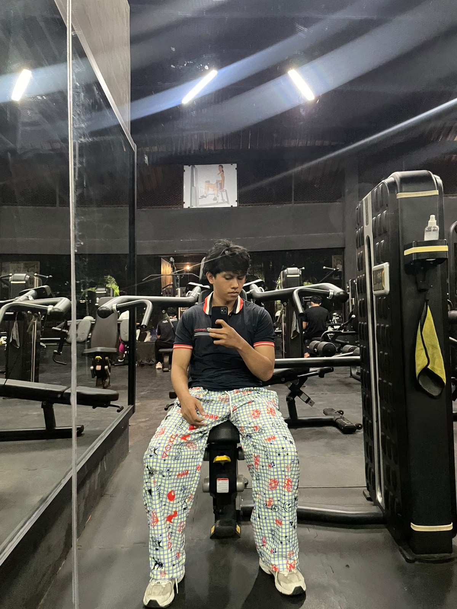

Halo, Saya
Ariel Fadly Purba
Mahasiswa Ilmu Komputer
Saya seorang mahasiswa Ilmu Komputer yang tertarik pada pengembangan web, teknologi, dan terus belajar untuk membangun sesuatu yang bermanfaat.
HTML5
Tailwind CSS
JavaScript
Database

Ariel Fadly Purba
Ilmu Komputer
📍 Singaraja